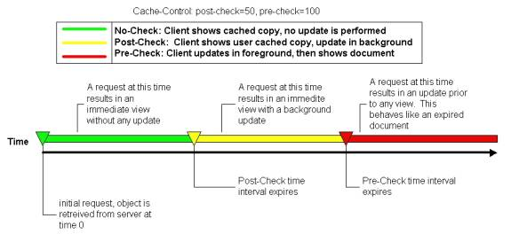

| ||
HTML is everywhere. The Internet, intranets, and extranets carry millions of packets of data. Today, many of those packets contain HTML. Thanks to tools like Microsoft® Visual InterDev™, FrontPage®, and Visual Notepad, Web authoring and development is easy.
Microsoft® Internet Explorer has made Web browsing extremely popular. The incredible features delivered with Internet Explorer 4.0 and Internet Explorer 5 have made the Web a compelling space in which to work and to play. The quantity and complexity of pages as well as the number of consumers of those pages has significantly increased the traffic on the Web. For all the merit that the Web brings to application developers, it introduces a host of problems. Among these problems are:
This article presents several tips on how you can get the most performance out of your pages.
In his DHTML Dude column in December of 1997, Michael Wallent recommended the use of .js files to consolidate commonly used scripts. The ability to reference external script files, both JScript® and Visual Basic® Scripting Edition (VBScript), has been around since Internet Explorer 3.02. By using this feature, the client only has to download the .js file the first time a page containing a reference to that .js file is requested. When Internet Explorer loads additional pages that refer to that .js file, it can retrieve the resource from the local cache. An additional benefit to using external .js files is ease of maintenance. A routine that is encapsulated in a single .js file only has to be modified in a single location. All pages that refer to that routine are automatically synchronized with the change in the script the next time those pages are reloaded.
If you are building a site containing different types of pages and each page type exhibits unique functionality, it makes sense to break up that .js file into a set of smaller .js files. That way the browser only loads into memory the scripts that are needed. For example, the DHTML reference contains essentially two classes of pages, object pages and member pages. Object pages include objects and collections. Member pages include properties, events, and methods. Both page types exhibit common DHTML-enabled show/hide functionality. See the HTML syntax section in the object pages and the example section in any page that contains 20 or more lines of sample code. To enable this common functionality, pages refer to common.js. In addition to show/hide functionality, object pages display filterable data-bound tables that list the members exposed by those objects. To enable this functionality, object pages refer to dhtmlobj.js. In short, consolidate your code wisely.
Here's a final tip on code reuse: use DHTML behaviors. DHTML behaviors, introduced in Internet Explorer 5, are the next logical step in the direction of code reuse. Like .js files, DHTML behaviors are implemented independent of the page in which they are used. Unlike .js files, they make code reuse easier through the use of a simple declarative syntax that is more natural for the HTML author. Developers concerned with down-level compatibility will appreciate the ability to seamlessly add functionality without having to protect their code from down-level browsers with conditional statements.
Today most Web developers are accustomed to writing code that checks the version of the browser before executing subsequent code, like so:
var sUA = window.navigator.userAgent;
var bIsIE4 = -1 != sUA.indexOf("MSIE 4");
if (bIsIE4)
{
// execute some Internet Explorer 4.x-specific functionality
}
By designing behaviors carefully to capture events and associating those behaviors with elements using the STYLE and CLASS attributes, it is possible to enhance the user experience safely and efficiently. For more information, see the article on creating behaviors.
DEFER is a relatively obscure attribute of the SCRIPT element, but the performance-minded page author can use it to indicate to Internet Explorer 4 or later that the SCRIPT tag contains no immediately executing code that impacts the document before the load event fires. Combined with the SRC attribute, the DEFER attribute can be used on a SCRIPT tag to indicate to Internet Explorer that the associated code should be downloaded in the background while the rest of the components of the page are downloaded and parsed.
The HTML 4.0 Specification  makes specific reference to
the write method of the document object.
When you mark your scripts as deferred, you should not include any calls to document.write
because these are typically executed immediately as the page is loading. In addition, you shouldn't defer any global variables or functions
that are accessed by immediately executing script.
makes specific reference to
the write method of the document object.
When you mark your scripts as deferred, you should not include any calls to document.write
because these are typically executed immediately as the page is loading. In addition, you shouldn't defer any global variables or functions
that are accessed by immediately executing script.
<SCRIPT DEFER>
function UsedLater()
{
// utility function called when the user interacts with the page
}
</SCRIPT>
<SCRIPT>
// Can't defer this block. It runs immediately and affects the shape of the document.
document.write("<H1>Immediate Gratification</H1>");
</SCRIPT>
The Internet Explorer cache is case-sensitive. That means that you should author your hyperlinks with case-sensitivity in mind. Take the following example:
<A href="/workshop/author/dhtml/reference/dhtmlrefs.asp">dhtml References</A> <A href="/Workshop/Author/DHTML/Reference/DHTMLRefs.asp">DHTML References
Both hyperlinks refer to the same page. Or do they? On a UNIX system these hyperlinks might refer to two distinct pages; thus, Internet Explorer treats them distinctly by making separate requests to the server, allowing the server to decide how to resolve the request.
Try the following test:
By authoring your hyperlinks consistently, you'll be saving space in the user's cache, and you'll be reducing the number of times Internet Explorer has to request the same resource from the server.
It's difficult to find a page on the Web that doesn't include at least one table. Tables are a great way of organizing information. Before CSS positioning was implemented in Internet Explorer 4.0, many HTML authors even used tables to lay out elements on their page. Now, if you're still using tables to achieve the latter, you ought to be using CSS positioning instead. Internet Explorer 5 offers even better performance to those who have embraced CSS.
Of course that doesn't rule out using tables altogether. Tables still have a place, and when you use them, you should specify the table-layout CSS attribute to achieve optimal performance out of Internet Explorer 5 or later. By doing the following, you'll allow Internet Explorer to start rendering the table before it's received all the data:
See the Enhancing Table Presentation article for more information on this feature.
Not enough can be said about writing solid code regardless of the platform or language. When targeting Internet Explorer 4.0 or later, a thorough understanding of the features provided by the DHTML Object Model will help you achieve that goal. The DHTML Object Model is immense, and a complete discussion of it is beyond the scope of this article. To address the topic of optimization, let's look at a typical operation in DHTML: accessing a collection.
In DHTML, iteration through a collection of objects is a typical operation. Let's say you're writing an HTML application that indexes content. Your task is to collect all the H1 elements on a given page and to use them as index entries.
Here's an example of how one might go about this:
function Iterate(aEntries)
{
for (var i=0; i < document.all.length; i++)
{
if (document.all(i).tagName == "H1")
{
aEntries[aEntries.length] = document.all(i).innerText;
}
}
}
What's wrong with the previous code? The code contains three calls through the all collection of the document. During each iteration through the loop, the scripting engine will:
That's not particularly efficient. The overhead amounts to numerous unnecessary calls to the DHTML Object Model for information that we already know about. Here's version two:
function Iterate2(aEntries)
{
var oAll = document.all;
var iLength = oAll.length;
for (var i=0; i < iLength; i++)
{
if (oAll(i).tagName == "H1")
{
aEntries[aEntries.length] = oAll(i).innerText;
}
}
}
This version assumes the overhead of creating two local variables to cache the all collection as well as the length of that collection. We can do better:
function Iterate3(aEntries)
{
var oH1Coll = document.all.tags("H1");
var iLength = oH1Coll.length;
for (var i=0; i < iLength; i++)
{
aEntries[aEntries.length] = oH1Coll(i).innerText;
}
}
Using the tags method of the all collection puts the burden on the DHTML Object Model to do the filtering and allows for the elimination of the if condition on every iteration of the scripted loop.
Note Beware the ramifications of caching DHTML collections. DHTML collections are truly dynamic, and any code you author that creates new elements and inserts them into the document may cause the collection to grow or shrink.
JScript and VBScript are interpreted languages. Because all the work is done at execution time, relative to compiled languages, these languages are slow. Within a script, every reference to an object amounts to two calls from the scripting engine to the DHTML Object Model. For those unfamiliar with or interested in the intimate details of OLE Automation, refer to the documentation on IDispatch::GetIDsOfNames() and IDispatch::Invoke() in the Microsoft Platform SDK.
The following example defines a DIV with an ID of div1.
<DIV ID="div1">
When Internet Explorer parses a page it accounts for all the objects on the page for which ID attributes have been explicitly specified. It adds them to the global namespace of the scripting engine, allowing you to refer to them directly. That means that the following is excessive:
<SCRIPT> var sText = document.all.div1.innerText; </SCRIPT>
In addition to the extra bytes that are passed across the network and parsed by the scripting engine, four extra calls are made by the script engine back to Internet Explorer in order to retrieve the innerText property of the DIV. The following is all that's required to retrieve the innerText of the DIV:
<SCRIPT> var sText = div1.innerText; </SCRIPT>
Notable exceptions to this minimalist approach include the following:
Elements contained within a FORM are hidden within the form's namespace. For example:
<FORM ID=form1> <INPUT TYPE="txtUrl"> </FORM> <SCRIPT> txtUrl.value = ... // yields a scripting error form1.txtUrl.value = ... // behaves as expected </SCRIPT>
For cross-frame security reasons, IFRAME properties must be fully scoped as shown in the following example:
<IFRAME ID="oFrame1" src="http://www.msn.com"> </IFRAME> <SCRIPT> // document.all is require to modify the SRC property of an IFRAME document.all.oFrame1.src = form1.txturl.value; </SCRIPT>
When a scripting engine encounters a scoped object model reference in your code, the engine needs to resolve the reference by looking up the left-most piece of that reference in a look-up table. Two factors influence the scripting engine's ability to perform the look-up:
The number of entries in the table corresponds to the number of global variables, named objects, and functions that you have defined on your page. Thus, you should only declare the ID attribute on those elements that you explicitly wish to manipulate through script.
As I mentioned above, there's a right way and a wrong way to scope references. When you've assigned an ID attribute to an element, there's no reason to access the corresponding object through document.all. Armed with this information, you might think that you should minimize your object model references in all cases. Let's look at another common example where this rule doesn't apply:
var sUA = navigator.userAgent;
The code works. It stores the HTTP_USER_AGENT string in the variable sUA. In order for the scripting engine to resolve this reference, however, it first attempts to find an object named navigator in the global look-up table. After looking through the entire table and not finding such a named item, the engine has to walk through the table again asking each of the global objects if it supports the navigator object. When it finally encounters the global window object, the object that exposes the navigator property, it can then retrieve the userAgent property. A better way to handle this situation, especially on a page containing many globally named items, is to fully scope the reference as follows:
var sUA = window.navigator.userAgent;
If all this talk about look-up tables and global objects has your head spinning, just remember this simple rule: fully scope your references to members of the window object. A list of these members is provided in the DHTML Reference.
Unlike SGML and XML, HTML has the notion of implicitly closed tags. This includes FRAME, IMG, LI, and P. If you don't close these tags, Internet Explorer renders your pages just fine. If you do close your tags, Internet Explorer will render your pages even faster.
It's tempting to author in the following way:
<P>The following is a list of ingredients: <UL> <LI>flour <LI>sugar <LI>butter </UL>
But the following will be parsed more quickly because it is well-formed and Internet Explorer doesn't need to look ahead to decide where the paragraph or list items end.
<P>The following is a list of ingredients:</P> <UL> <LI>flour</LI> <LI>sugar</LI> <LI>butter</LI> </UL>
The expires header is part of the HTTP 1.0 specification. When an HTTP server sends a resource such as an HTML page or an image down to a Web Browser, the server has the option of sending this header and an associated time stamp as part of the transaction. Web Browsers typically store the resource along with the expiry information in a local cache. On subsequent user requests for the same resource, the browser can first compare the current time and the expires time stamp. If the time stamp indicates a time in the future, the browser may simply load the resource from the cache rather than retrieving the resource from the server.
Even when a resource would advertise an expiration date in the future, browsers including Internet Explorer 4.0 would still perform a conditional GET to determine that the version of the object in the cache was the same as the version on the server. Upon careful analysis, the designers of Internet Explorer determined that this extra round trip was neither optimal nor necessary. For that reason, the behavior of Internet Explorer 5 has been modified in the following way: if the expiry of a cached resource is in the future relative to the time of the request, Internet Explorer will load the resource directly from the cache without contacting the server. Sites using the expires header on commonly used but infrequently updated resources will experience lower traffic volumes, and customers using Internet Explorer 5 will see pages render more quickly.
For more information on the expires header see RFC 2068. For specific information on how to specify the expires header for a resource on your HTTP server, see your HTTP server documentation.
When building a Web site, pages will change with varying frequency. Some pages will change daily, while others will never change once they are posted. To allow the Web site manager to indicate to a client browser how frequently an HTTP server should be queried for changes to a resource, Internet Explorer 5 introduces support for two extensions to the cache-control HTTP response header: pre-check and post-check.
By supporting these extensions, Internet Explorer reduces network traffic by sending fewer requests to the server. In addition, Internet Explorer improves the user experience by rendering resources from the cache and by fetching updates in the background after a specified interval.
The post-check and pre-check cache-control extensions are defined as follows:

When the browser is asked to fetch a resource which is in the cache and the cache entry includes the cache-control extensions (sent by the server to the client as an HTTP response header), the browser uses those extensions and the following logic to decide when to get the latest version of the page from the server:
Note that the Refresh button (including the F5 key) will not trigger this logic because Refresh always sends the if-modified-since request to the server. Hyperlinks do trigger this logic.
In the following example the server is indicating to Internet Explorer that the content will not change for one hour (pre-check=3600) and that it should retrieve the content directly from the local cache. On the off chance that the content is modified, if the user has requested the page after 15 minutes have elapsed, Internet Explorer should still display the content found in the local cache, but it should also perform a background check and optional fetch of the content if the server indicates that the content has changed.
Cache-Control: post-check=900,pre-check=3600
Try this:
<%@ LANGUAGE="JScript" %>
<%
Response.AddHeader("Cache-Control", "post-check=120,pre-check=240");
%>
<H1>Hello, world!</H1>
This feature is language-independent and works in both JScript and VBScript.
While the previous example shows you how to add the cache-control extensions to an individual page, you can add the header to a set of pages by embedding the script in a server-side include referenced by all your pages. Using a server-side include allows you to tune the settings without having to update each page individually. Microsoft Internet Information Server 4.0 introduces the ability for an administrator to specify additional response headers through the Microsoft Management Console. See the latest Microsoft Internet Information Server documentation for details.
The following links provide more information related to Web page performance.
Did you find this topic useful? Suggestions for other topics? Write us!
© 1999 Microsoft Corporation. All rights reserved. Terms of use.